|
|
|
Представление графов в оперативной памяти
Графы как структуры данных широко применяются при решении многих задач. Они могут использоваться для представления данных, моделей процессов, структур программ и так далее. При решении многих задач приходится моделировать объекты со сложной структурой, которые представляются в виде множества элементов, между которыми существуют заданные отношения (связи). В технике такие объекты называются сетями. Задачи, решаемые с использованием графов, относятся к задачам выбора. Все они могут быть решены с помощью алгоритмов, выполняющих полный перебор всех возможных решений. Однако сложность таких алгоритмов оценивается нотацией O(2n) и практически такие алгоритмы не могут быть реализованы за приемлемое время. Поэтому большинство алгоритмов для графов основываются на эвристических методах при поиске оптимального решения. Основные определенияГраф задается в виде пары множеств G = (V, E), где V - конечное множество элементов, E - множество бинарных отношений между элементами. Элементы называются вершинами, а бинарные отношения - ребрами или дугами. Графы делятся на ориентированные (орграфы) и неориентированные графы. В
ориентированном
графе (орграфе) бинарные отношения между
вершинами упорядочены, то есть
отношения между парой вершин u, v (u, v} 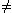 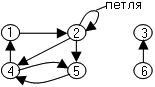
В неориентированном графе отношения симметричны, то есть (u, v) = (v, u). В неориентированном графе нет дуг, связи называют ребрами. 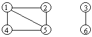
Под взвешенным графом понимается граф, ребрам которого поставлены в соответствие числа - веса или цены, или стоимости. Весовая функция графа W - это отображение множества весов на множество ребер графа. Весовая функция может храниться в структуре графа (списках смежности или матрице смежности) или в отдельной матрице весов. Подграфом
графа G(V, E) является граф G'(V', E') такой,
что V' 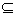 Для орграфа приняты понятия входящих и выходящих дуг. Для неориентированного графа используется понятие инцидентного ребра. Для вершины 1 в орграфе есть одна выходящая и одна входящая дуга, в неориентированном графе вершина 1 имеет 3 инцидентных ребра. Для графов введено понятие смежных вершин. В орграфе с дугой (u, v) вершина v является смежной с вершиной u, если дуга (u, v) - выходящая для u и входящая для v. В неориентированном графе с ребром (u, v) вершина v - смежная с вершиной u и наоборот, вершина u - смежная с вершиной v. В орграфе вершина 1 - смежная с вершиной 4 , но вершина 4 - не смежная с вершиной 1. В неориентированном графе 1 и 4 - смежные друг другу. Степенью вершины в неориентированном графе называется число инцидентных ей ребер. В орграфе различают исходящую и входящую степени. Сумма исходящей и входящей степеней вершины называется степенью вершины орграфа. Путь
длины k из вершины
u в вершину v определяется как
последовательность вершин <v0, v1,
v2, ...,vk>, в которой v0=u,
vk = v и (vi-1, vi) 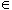 Под взвешенной длиной пути во взвешенном графе понимается сумма весов ребер, соединяющих вершины пути <v0, v1, v2, ...,vk>. Если для вершин u и v существует путь P, то вершина v достижима из вершины u по пути P. Простой путь не содержит одинаковых вершин и ребер. Циклом в графе называется путь, в котором начальная вершина совпадает с конечной. Цикл называется простым, если в нем нет одинаковых вершин кроме первой и последней. Граф, не содержащий циклов, называется ациклическим. Граф, содержащий хотя бы один цикл, называется циклическим. Неориентированный граф называется связным, если для любой пары вершин существует путь. В неориентированном графе отношение достижимости является отношением эквивалентности на множестве вершин. Такое множество называется связной компонентой. Орграф называется сильно связным, если из любой его вершины достижима любая другая вершина. Любой орграф можно разбить на сильно связные компоненты, которые определяются как классы эквивалентности с отношениями "u достижимо из v" и "v достижимо из u". Орграф сильно связен тогда, когда состоит из одной сильно связной компоненты. Два
графа G = (V, E) и G' = (V', E') называются
изоморфными, если существует
взаимно однозначное соответствие f : v 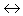
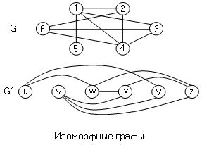 Полным графом называется неориентированный граф, содержащий все возможные ребра для данного множества вершин, то есть любая вершина смежна с любой другой. Неориентированный граф (V, E) называется двудольным, если множество вершин можно разбить на две части таким образом , что концы любого ребра окажутся в разных частях. Ациклический неориентированный граф называется лесом, связный ациклический неориентированный граф называется деревом без выделенного корня.
Представление графов в оперативной памятиСуществуют два способа представления графа G = (V, E) - в виде набора списков смежных вершин и в виде матрицы смежности. Первый способ предпочтительней для разреженных графов, когда |E| много меньше |V|2. Представление с помощью матрицы смежности удобнее использовать для насыщенных графов, когда |E| сравнимо |V|2. Представление графа G = (V, E) в виде списков смежности использует массив Adj из |V| списков, по одному для каждой вершины. Для каждой вершины список смежных вершин Adj [u] содержит в произвольном порядке все смежные с ней вершины v, для которых существует ребро (u, v)E. Граф, представленный с помощью списков смежности, называется L - графом. Неориентированный граф в форме L- графа: 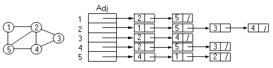
Ориентированный граф в форме L- графа: 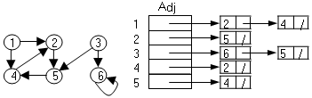
Для неориентированного графа сумма длин всех списков равна удвоенному числу ребер, так как ребро (u, v) порождает элементы в списках вершины u и вершины v. Для орграфа сумма длин списков равна числу ребер. В обоих случаях количество памяти для представления графа оценивается как O(V + E). Списки смежности удобны, когда наряду с номером вершины нужно хранить дополнительную информацию (например, вес ребра, родителя вершины, метку вершины). Недостатком представлений является то, что для того, чтобы узнать есть ли ребро из вершины u и v приходится просматривать весь список. Этого можно избежать в представлении с помощью матрицы смежности. Эта форма представления графа называется M- графом. Неориентированный граф в форме M- графа: 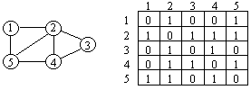
Ориентированный граф в форме M- графа: 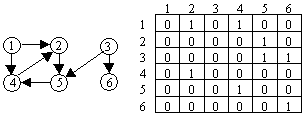
Элемент матрицы aij =1, если есть ребро или дуга (i, j)E и aij = 0 в противном случае. Для орграфа и неориентированного графа матрицы требует O(V2) памяти. Для неориентированного графа матрица смежности симметрична относительно главной диагонали. Поэтому достаточно хранить только элементы от главной диагонали и выше. В матрице смежности вместо 0 и 1 можно хранить веса ребер w(u, v). Для отсутствующих ребер можно использовать специальное значение nil (0 или ). Матрица смежности удобнее для небольших графов. Если не нужно хранить веса, то для элементов матрицы сме Для взвешенного графа в структуру списков смежности или матрицы смежности заносятся веса ребер (весовая функция): 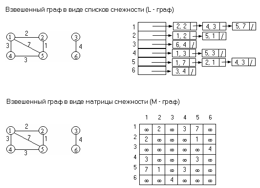 |
|
|